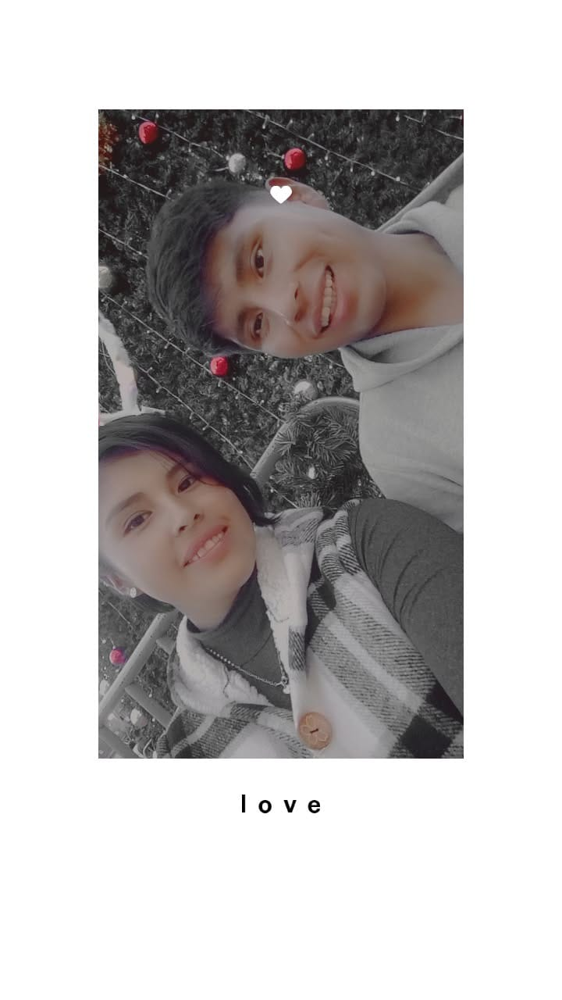
Nuestra Navidad en La Paz
Hace casi un año fuimos juntos a ver el árbol del estadio. Una noche que guardo con muchísimo cariño. ♥
Hay un lugarcito en internet que existe solo para recordarte cuánto te quiero.
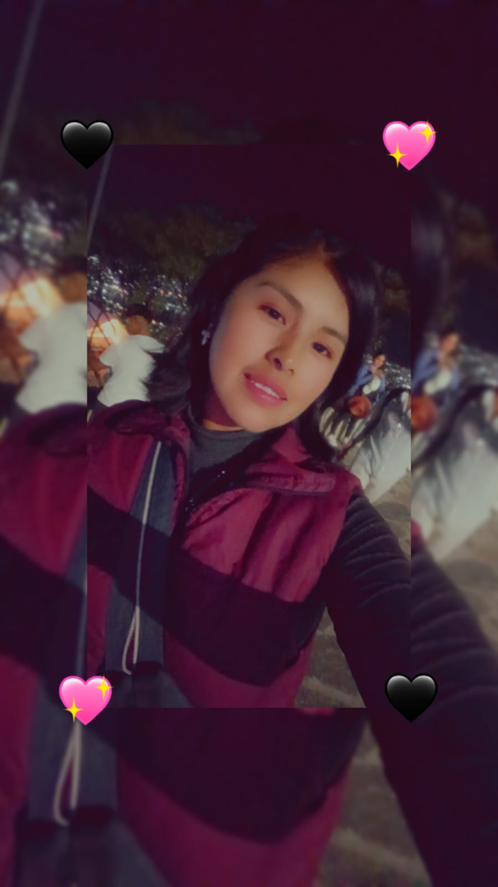
Aracely, aunque hoy nos separen kilómetros, eres mi lugar favorito. Y esta historia contigo sigue siendo mi película preferida. — German
Un 21 de diciembre de 2025, junto al árbol de Navidad de La Paz, te pregunté en persona si querías ser mi novia. Ese momento tan nuestro es el comienzo de esta historia que llevo con tanto amor. 🎄✨💞
Cuando quieras, abre una notita hecha con todo mi cariño.
Aquí te espera un mensajito, mi POU. ✨

Hace casi un año fuimos juntos a ver el árbol del estadio. Una noche que guardo con muchísimo cariño. ♥
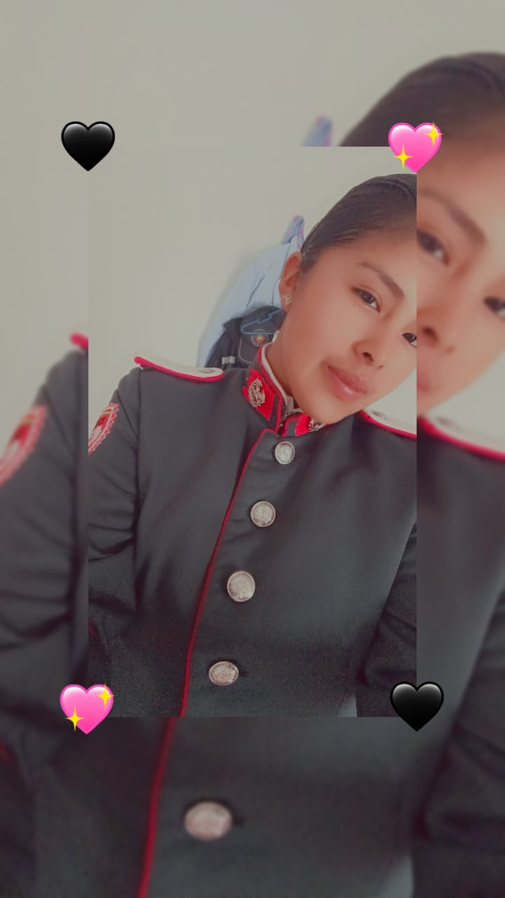
Te digo así por tu fortaleza y disciplina, y porque eres mi persona favorita dentro y fuera de cada misión.
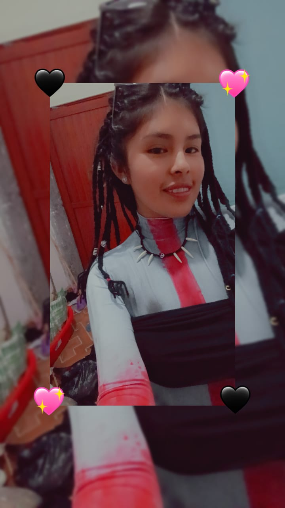
Me provoca sonreír, me alegra los días y hace que te extrañe todavía más.
Me encanta verte brillar y ser orgullosamente tú.
Un recuerdo que me hace extrañarte y esperar con ilusión el próximo abrazo.
De La Paz hasta Cochabamba, siempre te llevo cerquita de mi corazón.
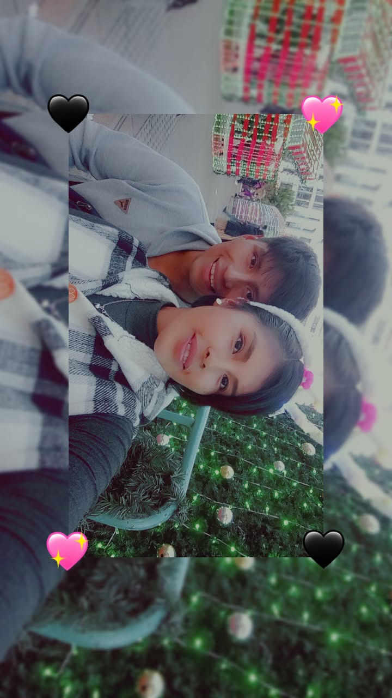
Una de esas noches en La Paz que quisiera volver a vivir contigo. ♥
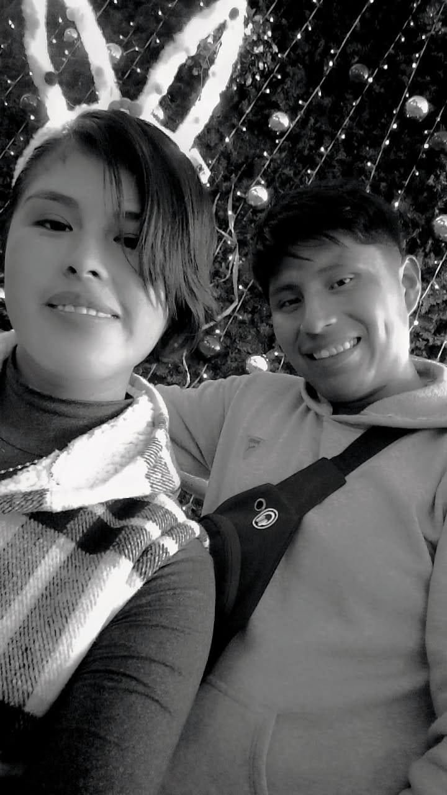
Hasta en blanco y negro, este recuerdo sigue llenándome de alegría.
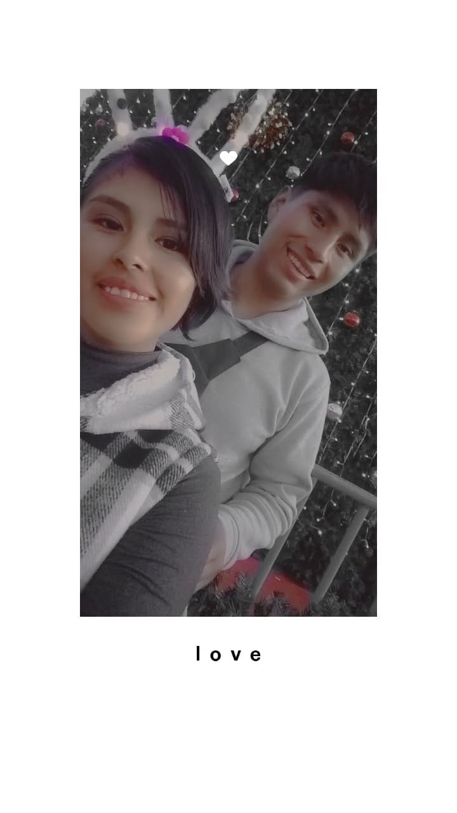
Una foto, un árbol y un momento que siempre guardaré en el corazón.
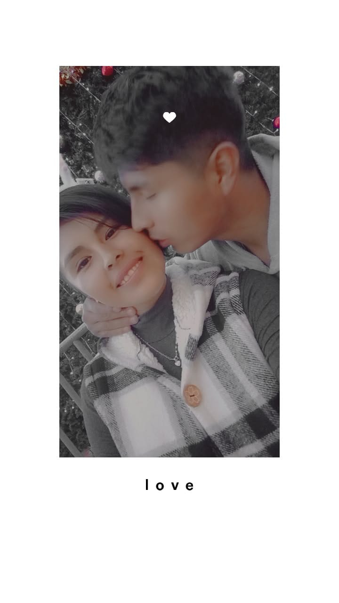
De todos los adornos de esa noche, mi favorito fue tenerte cerquita.
Tu esfuerzo y tu coraje me llenan de orgullo; siempre quiero estar para ti.
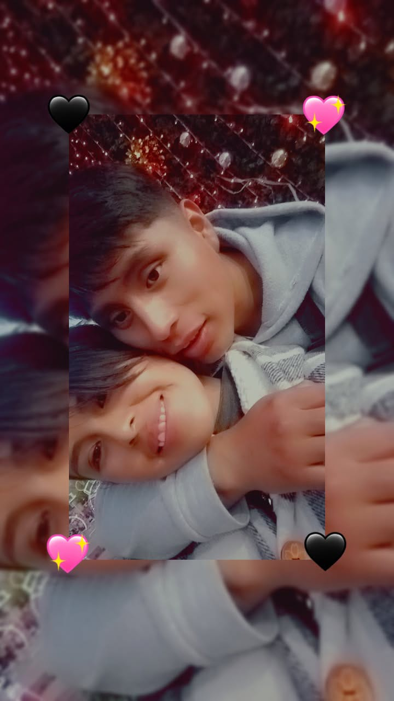
Ese abrazo junto al árbol que me dan ganas de repetir muy pronto.
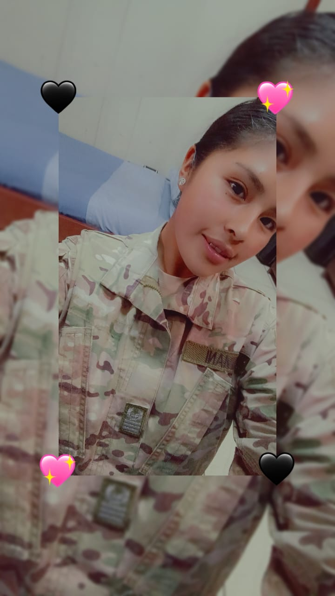
Qué bonito es verte luchar por lo que quieres y brillar a tu manera.
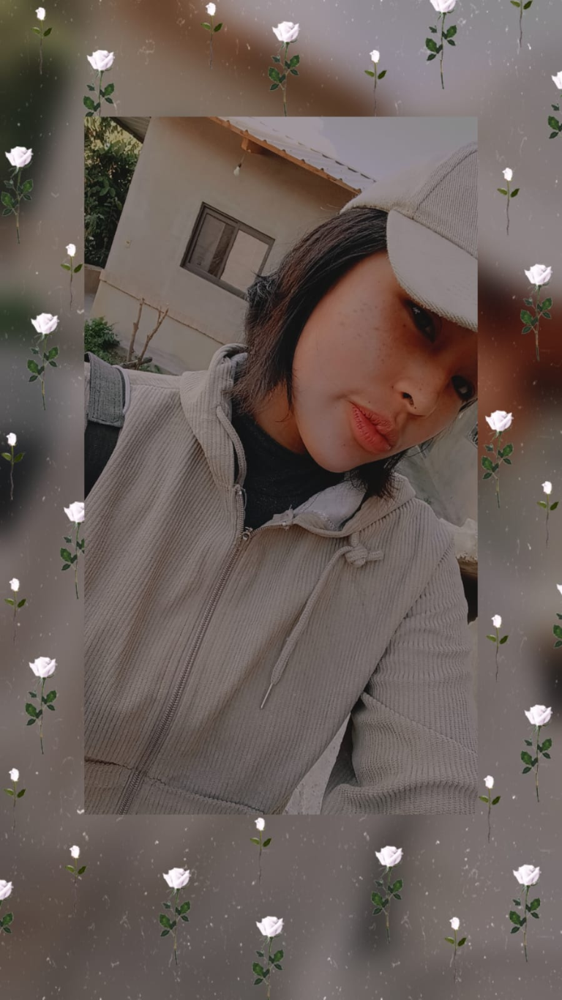
Con tu estilo, tu sonrisa y esa forma tan tuya de ser hermosa.
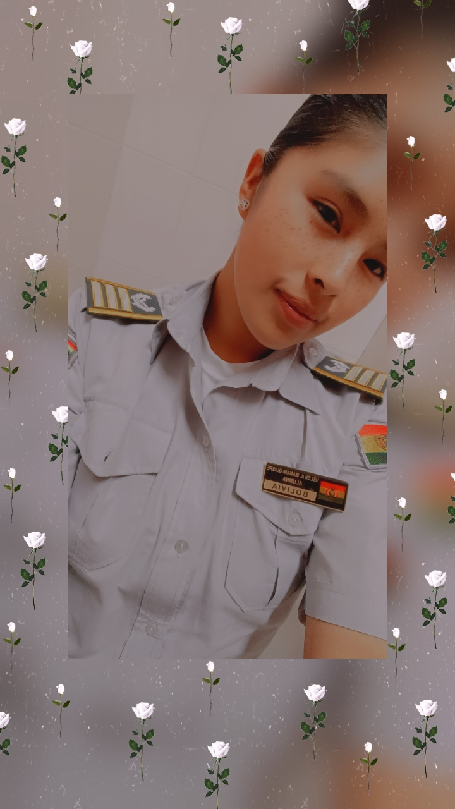
Me encanta verte orgullosa de todo lo que has logrado.
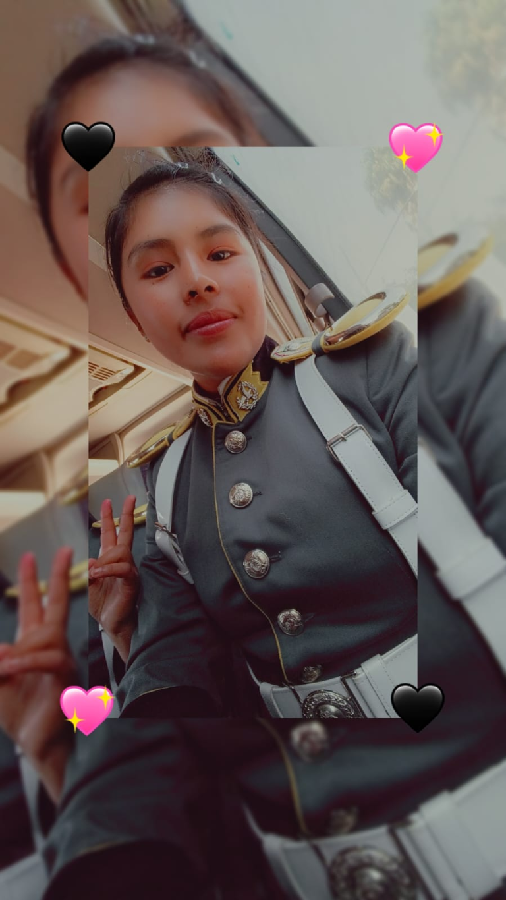
Una mujer admirable, fuerte y preciosa, en cada versión de ti.
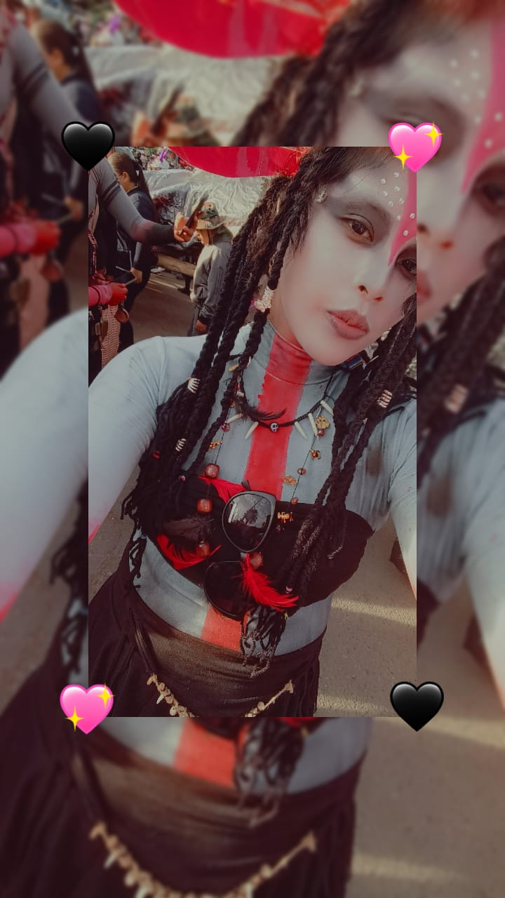
Tan hermosa y original con ese disfraz; imposible no sonreír al verte.
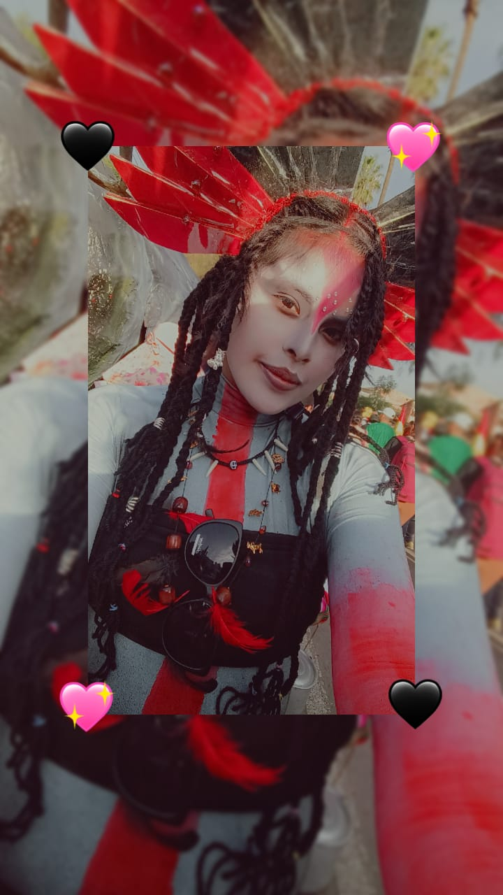
Tu creatividad y tu belleza hacen especial hasta la aventura más fantástica.
Cada foto guarda una parte de nuestra historia: nuestras Navidades, tu valentía y todos esos momentos en que te ves tan tú. ♥
Junté nuestras fotos como si cada una fuera una lucecita de aquel árbol de Navidad. Toca cualquier recuerdo: se abrirá con su mensaje y un collage de nuestras fotos. ♥
Amor, te escribo estas palabras desde lo más profundo de mi corazón para que queden grabadas aquí, en esta página que construí pensando únicamente en ti. Porque aunque la distancia nos separe hoy entre La Paz y Cochabamba, mi mente y mi alma siempre están a tu lado. No hay un solo día en que no te recuerde, y no hay momento en que no valore todo lo que eres y todo lo que significas en mi vida. 💌❤️
Me pongo a pensar en todo lo que hemos vivido juntos y se me llena el pecho de una nostalgia bonita. Recuerdo con tanto cariño esa Navidad que pasamos juntos: ese momento al pie del árbol, con las luces brillando y tu sonrisa iluminando todo a mi alrededor. Ese día me di cuenta de lo afortunado que soy de tenerte y de lo mágico que es compartir la vida contigo. Esos recuerdos son mi refugio cuando la distancia pesa y cuando te extraño más de la cuenta. 🎄✨🥰
Extraño tanto nuestras cosas del día a día. Extraño la emoción que me da cuando me llega una fotito tuya y puedo contemplarte, aunque sea a través de la pantalla. Extraño con el alma escuchar tu voz en los audios; oírte hablar me cambia el día por completo, me devuelve la paz y me saca la sonrisa más sincera del mundo. Eres esa luz que ilumina mis días oscuros, porque aunque a veces me sienta triste o abrumado, basta con pensar en ti, con recordar tu risa o leer tus mensajes para que todo vuelva a tener sentido. Tú me haces inmensamente feliz de una manera que nadie más logra. 📸🎧☀️💖
Sé que estás pasando por un momento muy pesado, con mil cosas en la cabeza, con todo el esfuerzo y el estrés en la EMSE, y quiero que recuerdes siempre que te entiendo. Comprendo perfectamente el momento que estás viviendo, tus ocupaciones y tu necesidad de enfocarte; por eso mismo quiero que jamás olvides que, a pesar de todo, no estás sola. Aquí estoy yo, apoyándote en silencio, creyendo en ti y esperando pacientemente por nuestros momentos juntos. Mi amor por ti no cambia con la distancia ni con las prisas; al contrario, se hace más fuerte porque sé lo mucho que vales y lo mucho que luchas por tus metas. 💪🎖️🤍
Gracias por ser mi vida, por ser mi refugio y por darle tanto color a mi mundo. Te amo con todo lo que soy y siempre voy a estar aquí para ti, recordándote lo especial que eres y esperando el momento en que volvamos a estar juntos para no soltarte nunca más. 🌈❤️🔥🫂
Con todo mi amor, tu German ♥
Grabé estas palabras para que puedas escucharlas cuando quieras, mi POU. ♥
Estas rosas son para ti, mi POU. Toca cada una: detrás de sus pétalos hay un piropo distinto, enviado desde La Paz hasta Cochabamba. ♥
Mi querida Aracely, cada rosa lleva un abrazo que hoy no puedo darte en persona. Aunque nuestros caminos estén en ciudades distintas, mi corazón siempre encuentra el camino hasta ti. Te quiero con todo lo que soy, mi POU. — German ♥
Toca una rosa y te dirá algo bonito. ♥
Este POU es tu compañerito virtual: tiene respuestas cariñosas para recordarles su historia, animarte y sacarte una sonrisa. Funciona sin internet y no puede saber qué está pasando ahora ni inventar datos personales.
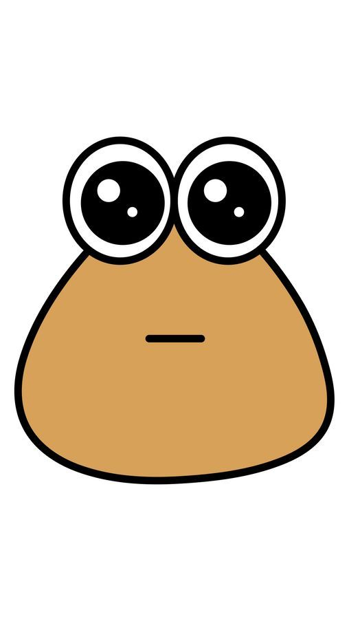
¡Hola, POU! Soy el mini ayudante de German. ¿Quieres preguntarme cuánto te quiere o qué piensa de la distancia? 💌
Las respuestas son cariñosas y preparadas para ustedes. Puedes escuchar el audio original de POU o activar la lectura con la voz en español de este dispositivo; esta no imita la voz del videojuego. ♥